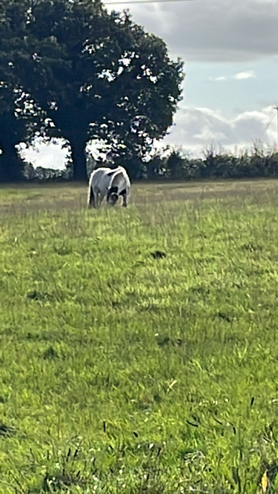
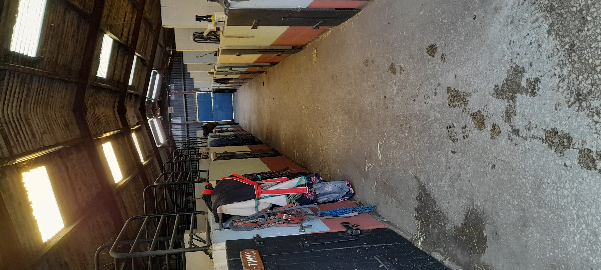
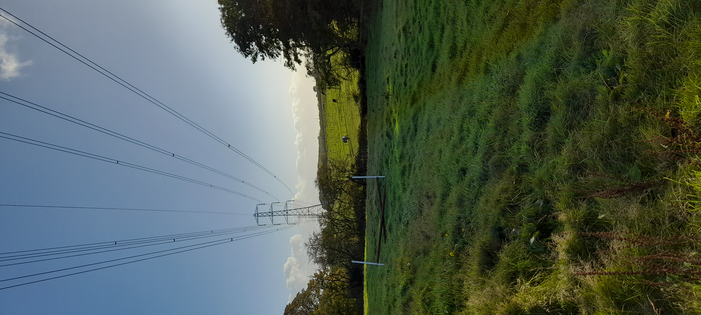
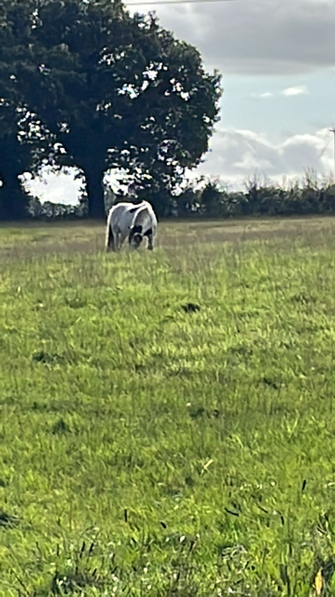
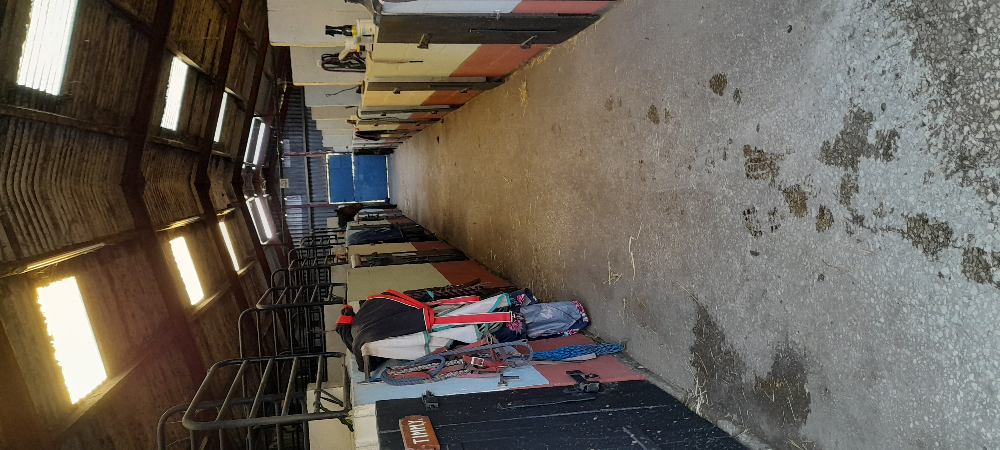
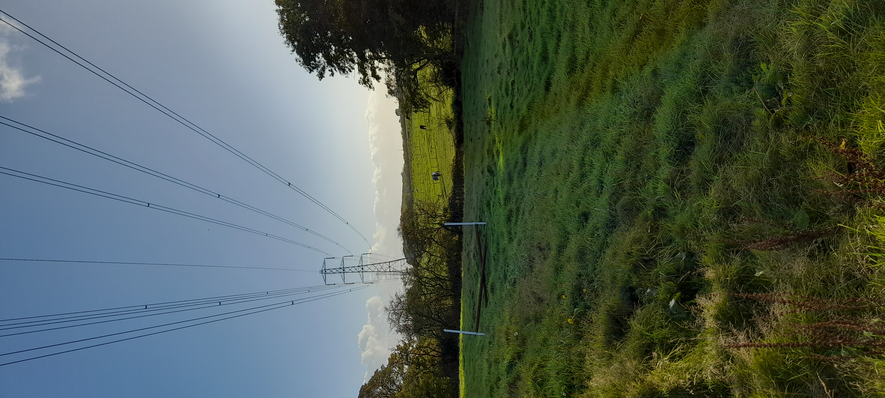

Bates Green Farm Livery Stables has been established for over 40 years. This is a DIY Livery stables and is a quiet, family friendly yard. Professionally managed stable yard Horse welfare and customer satisfaction are our main priorities
Outdoor Arena
Indoor Arena
Sand Paddock
Tea Making Facilities
CCTV
Designated Muck Out Stables
Outdoor Toilet facilities
24/7 Summer Turnout
Alternate Days Winter Turn Out (weather permitting)

 





Dickets Lane
Lathom
Nr Skelmersdale
WN8 8UH
Contact Jane
01695 722351
07523 612398